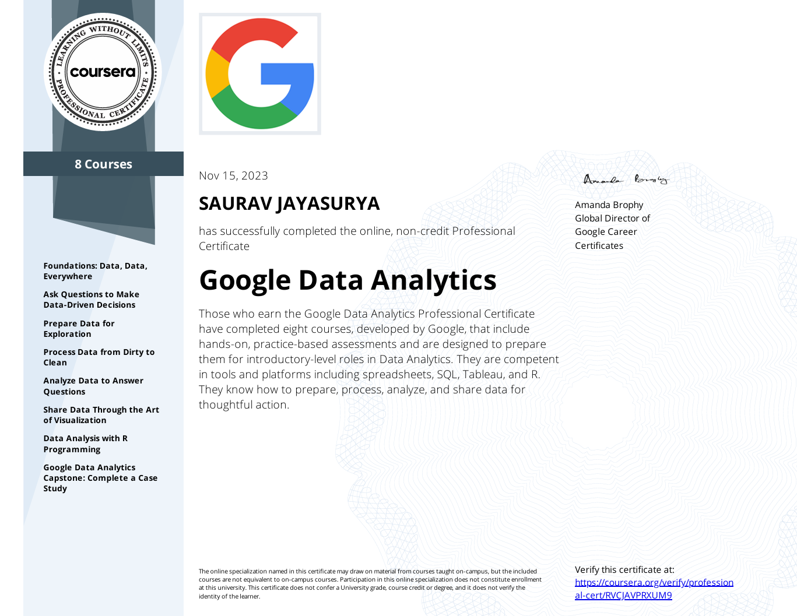
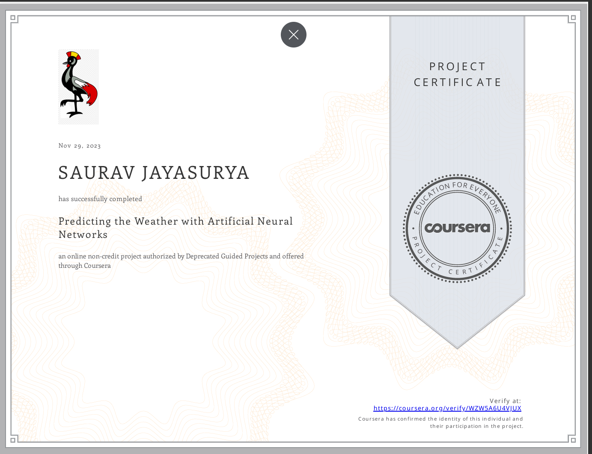
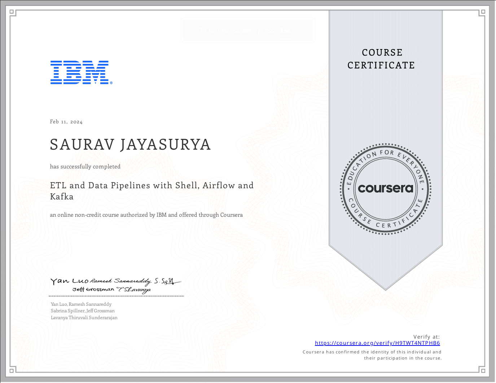
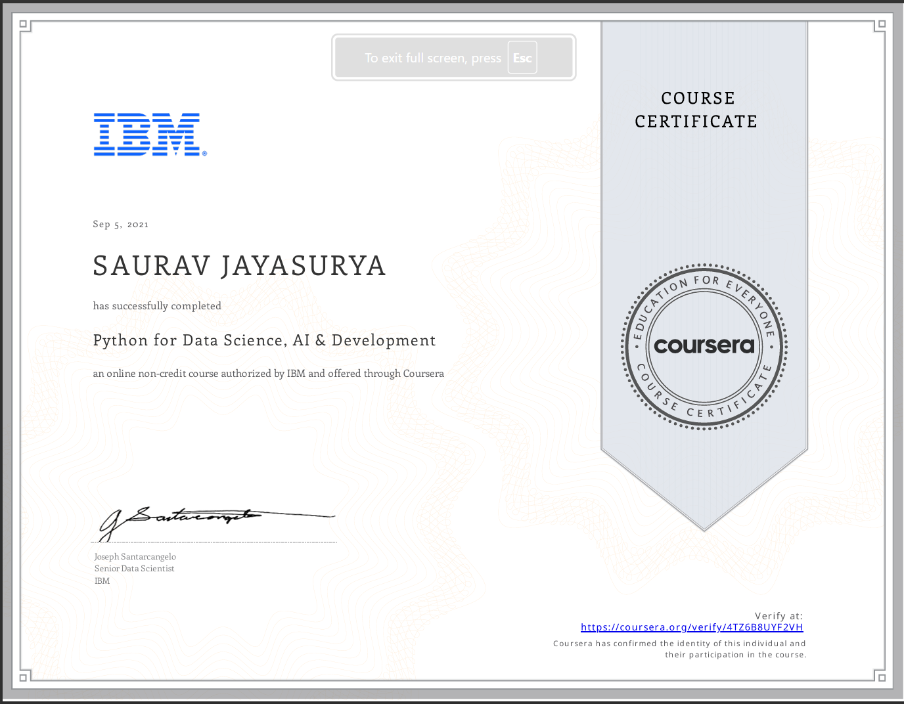
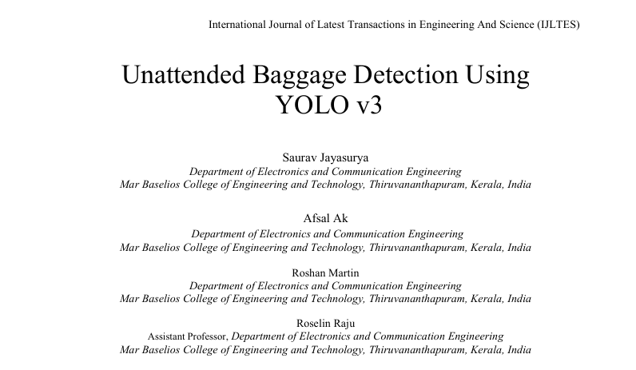

Here's a list of relevant IT mini-projects and certificates I've earned over the years.
A professional certification program that includes 8 courses:
1. Foundations: Data, Data,
Everywhere
2. Ask Questions to Make
Data-Driven Decisions
3. Prepare Data for
Exploration
4. Process Data from Dirty to
Clean
6. Analyze Data to Answer
Questions
7. Share Data Through the Art
of Visualization
8. Data Analysis with R
Programming
9. Google Data Analytics
Capstone: Complete a Case
Study

Used Jupyer+Python mainly.
Loaded a pre-built data set from Australian weather stations, processed the data to make it compatible with a neural network. Split the data into training and testing sets and then finally trained the network to make optimized predictions.

Understood basic and foundation data engineering concepts like ETL and ELT.
For the project on this course, I've implemented a working ETL workflow through bash and Python functions.

Learnt Python basics. Gained comprehensive understanding of data structures, loops, functions, exception handling etc.
For the project on this course, I've accessed and extracted web-based data by working with REST APIs using requests and performing webscraping using Beautiful Soup.

Final Year IEEE-magazine published project.
As a team of three, we built our own custom data test. 2000 pictures of each baggage category, labelled it manually using LabelImg and used it as training and validation data.
The model had an accuracy of roughly 70%.

View the official publication